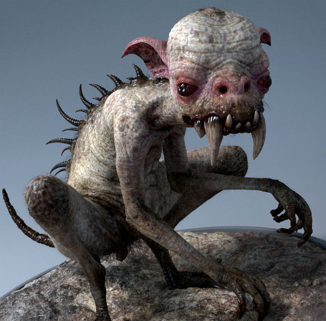

Городская легенда о чупакабре берет своё начало в 1950-х годах, когда в Пуэрто-Рико обнаружили нескольких мертвых коз, у которых якобы была высосана кровь. В середине 1990-х годов легенда приобрела широкое распространение, в основном благодаря телевидению и интернету. В 1995 году, по всей видимости, под впечатлением от фильма «Особь», появились описания чупакабры как двуногого существа высотой около метра, покрытого светлыми волосами и с торчащими из боков шипами. В начале 2000-х годов чупакабру уже описывали преимущественно как четвероногое существо, похожее на собаку или койота с клыками и свиной мордой. Также многие свидетельства указывали на наличие в чупакабре черт кенгуру, летучей мыши, рептилии и насекомого
